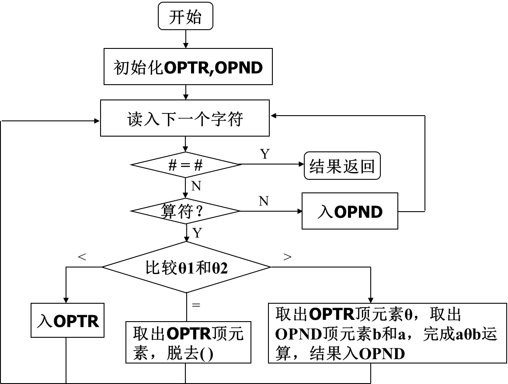
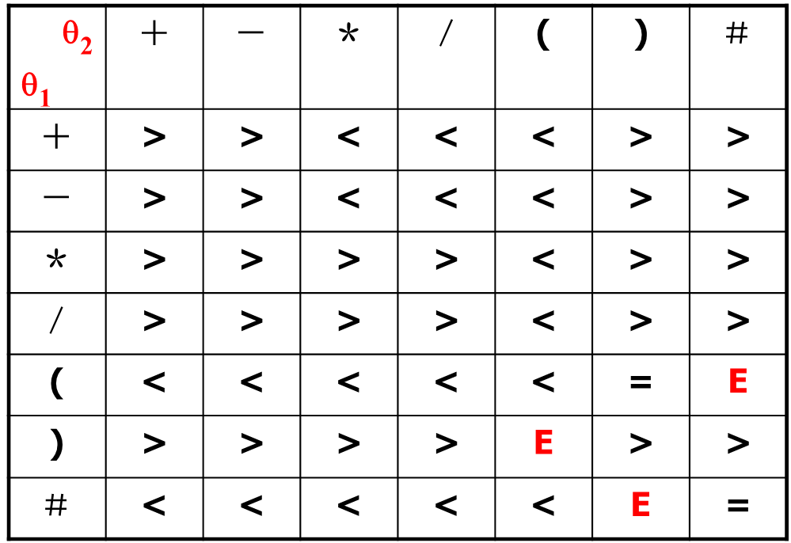
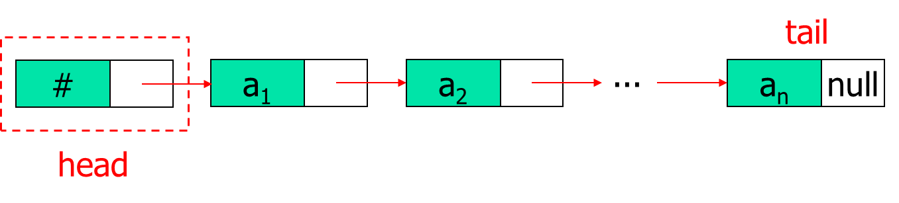
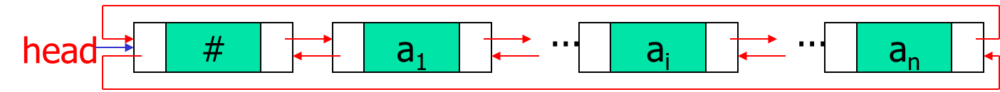

期末复习（下）¶
Estimated time to read: 6 minutes
1 数据结构——数组，队列，堆栈¶
1.1 顺序存储结构¶
1.1.1 数组array¶
数组的定义
类型名 数组名[数组长度];
int a[10];
类型名 数组名[数组长度(可省略)] = {元素1, 元素2, ...};
int a[5] = {1, 2, 3, 4, 5};
int b[ ] = {1, 2, 3, 4, 5};
int c[5] = {1, 2, 3}; // 其余元素为0
int a[][];
int b[3][];
int c[][4];
int d[3][4];
int e[][] = {
{1, 2, 3, 4},
{5, 6, 7, 8},
{9, 10, 11, 12}
};
int f[][4] = {
{1, 2, 3, 4},
{5, 6, 7, 8},
{9, 10, 11, 12}
};
1.1.2 队列queue¶
循环队列
-一般队列存在一个问题？假溢出
-循环队列可以解决这个问题：
其中rear=(rear+1)%m
front=(front+1)%m
-队空？rear=front;
 -队满？rear=front;
-队满？rear=front;
 -如何区分队空与队满？
方法1-定义1个标志符s，s=0表示队空，s=1表示队非空
方法2-引入队列长度的变量，长度为0表示队空，长度达到存储空间最大值表示队满
方法3-多加1个存储单元（不用来放数据），用front=rear表示队空，front=(rear+1)%m表示队满
-如何区分队空与队满？
方法1-定义1个标志符s，s=0表示队空，s=1表示队非空
方法2-引入队列长度的变量，长度为0表示队空，长度达到存储空间最大值表示队满
方法3-多加1个存储单元（不用来放数据），用front=rear表示队空，front=(rear+1)%m表示队满

初始化
void initqueue(int **q,int m,int *rear,int *front)
{
*q=(int *)malloc(m * sizeof(int)); //动态申请容量为m的存储空间
*front=0; //队头指针的指针
*rear=0; //队尾指针的指针
}
void enqueue(int *q, int m, int *front, int *rear, int *s,int x )
{
if((*s == 1)&&(*rear == *front)) //*s为flag，判队列满(方法1)
{
printf("Queue overflow!");
return;
}
q[*rear]=x; *s=1; //入队，置队列非空标志
*rear=(*rear+1)%m; //序号循环
}
int dequeue(int *q, int m, int *front, int *rear, int *s )
{
int y;
if(*s == 0) //判队列空(方法1)
{
printf("Queue underflow!");
return -11111;
}
y=q[*front]; //退队
*front=(*front+1)%m ; //序号循环
if(*front == *rear) *s=0; //置队列空标志
return y;
}
void destroyqueue(int **q,int *front,int *rear)
{
free(*q); // 释放内存
*q=NULL; // 将指针置NULL（安全）
*front=0;
*rear=0;
}
1.1.3 堆栈stack¶
初始化
void initstack(int **s,int m,int *top)
{
*s=(int *)malloc(m * sizeof(int)); //动态申请容量为m的存储空间
*top=0; //栈顶指针
}
void push(int *s,int m,int *top,int x)
{
if(*top == m) //栈满
{
printf("Stack overflow!");
return;
}
s[*top]=x; //入栈
*top=*top+1; //序号指针递增
}
int pop(int *s,int m,int *top)
{
int y;
if(*top == 0) //栈空
{
printf("Stack underflow!");
return;
}
y=s[*top-1]; //退栈
*top=*top-1; //序号指针递减
return(y); //返回栈顶元素
}
void destroystack(int **s, int *top) {
if(*s != NULL) //检查指针是否有效
{
free(*s); //释放内存
*s=NULL; //将指针置为NULL，防止野指针
}
*top=0; //重置栈顶指针
}
1.1.4 例¶
中缀表达式求值
问题：计算中缀表达式（如 3+4*2/(1-5)^2）的值。
算法思路（双栈法）：

运算符比较：

核心数据结构设计：
{kind=link}
{kind=link}
// 操作数栈
typedef struct {
double *data; // 存储操作数的数组
int top; // 栈顶指针
int capacity; // 栈容量
} OperandStack;
// 运算符栈
typedef struct {
char *data; // 存储运算符的数组
int top; // 栈顶指针
int capacity; // 栈容量
} OperatorStack;
double EvaluateExpression() //核心函数，参考PPT的内容
{
int topTR=0;
int topND=0;
char *OPTR;
double *OPND;
int n=10000;
char c;
char theta,x;
double a,b,result;
InitStack(&OPTR,n,&topTR);
Push(OPTR,&topTR,'\n');
InitDoubleStack(&OPND,n,&topND);
c=getchar(); //初始化两个栈
while(c!='\n' || GetTop(OPTR,&topTR)!='\n')
{
if (c>='0' && c<='9') //如果是数字的话
{
double num=c-'0'; //先将字符转换为double类型，这里只有0-9的整数所以能直接换
PushDouble(OPND,&topND,num); //压入double栈
c=getchar();
}
else //如果是其他（错误的输入符号或者是运算符）的话
{
switch(Precede(GetTop(OPTR,&topTR),c)) //判断情况：新拿的运算符和char栈顶的运算符的优先级，通过Precede函数
{
case -1: //如果栈顶元素优先级低，将新运算符入栈
Push(OPTR,&topTR,c);
c=getchar();
break;
case 0: //脱'('和')'
Pop(OPTR, &topTR, &x);
c=getchar();
break;
case 1: //栈顶元素优先级高，栈顶运算符退栈，double栈也退栈，进行运算，并将运算结果入double栈
Pop(OPTR,&topTR,&theta);
PopDouble(OPND,&topND,&b);
PopDouble(OPND,&topND,&a);
result=Operate(a,theta,b);
PushDouble(OPND,&topND,result);
break;
default: //其他情况（相当于case 2:），不是规定的运算符，或表达式有问题使两个没法比较的运算符进行比较
return -100000;
break;
}
}
}
return GetTopDouble(OPND, &topND);
}
1.2 链式存储结构(链表)¶
1.2.1 链式存储结构基础¶
头结点Header Node：一个附加在链表第一个元素之前的特殊链结点。  其指针域指向链表中第一个存放实际数据元素的结点（即首元结点）。 头指针 (Head Pointer)：指向链表第一个结点的指针。若链表包含头结点，则头指针指向头结点；若不包含，则头指针直接指向首元结点。
{kind=link}
1.2.2 链表的基本运算¶
结点定义
//定义链表结点结构
typedef struct Node {
int data; //数据域
struct Node *next; //指针域，指向下一个结点
}Node, *LinkList;
//初始化链表：创建头结点
void InitList(LinkList *L){
*L=(LinkList)malloc(sizeof(Node)); //分配头结点空间
(*L)->next=NULL; //头结点指针域置空，表示空链表
(*L)->data=0;
}
//在第i个位置插入元素e（头结点算第0个位置）
void ListInsert(LinkList L, int i, int e,int *flag){
Node *p=L; // p指向头结点
int j=0;
// 寻找第i-1个结点
while(p!= NULL&&j<i-1){
p=p->next;
j++;
}
// 判断i是否合法
if (p == NULL||j>i-1){
printf("插入位置i不合法！\n");
*flag=0; // 插入失败
}
// 创建新结点
Node *s=(Node *)malloc(sizeof(Node));
// 插入新结点
s->data=e; // 设置新结点数据
s->next=p->next; // 步骤1：新结点指向原后继
p->next=s; // 步骤2：前驱指向新结点
*flag=1; // 插入成功
}
//在链表头部插入新结点（头插法）
void HeadInsert(LinkList L, int e){
Node *s=(Node *)malloc(sizeof(Node));
s->data=e; // 设置新结点数据
s->next=L->next; // 新结点指向原第一个结点
L->next=s; // 头结点指向新结点
}
// 在链表尾部插入新结点（尾插法）
void TailInsert(LinkList L, int e){
Node *s=(Node *)malloc(sizeof(Node));
s->data=e; // 设置新结点数据
s->next=NULL; // 新结点是尾结点
// 找到尾结点
Node *p=L;
while(p->next != NULL){
p=p->next;
}
p->next=s; // 原尾结点指向新结点
}
// 删除第i个位置的元素，并返回其值
int ListDelete(LinkList L, int i, int *flag){
int e=0;
Node *p=L; // p指向头结点
int j=0;
// 寻找第i-1个结点
while(p->next!=NULL&&j<i-1){
p=p->next;
j++;
}
// 判断i是否合法
if (p->next==NULL||j>i-1){
printf("删除位置i不合法！\n");
*flag=0; // 删除失败
return -1;
}
// 删除操作
Node *q=p->next; // q指向要删除的结点
e=q->data; // 保存被删除结点的值
p->next=q->next; // 将q从链中摘除
free(q); // 释放结点内存
*flag=1;
return e; // 删除成功
}
(2) 按值删除
// 删除第一个值为e的结点
void DeleteByValue(LinkList L, int e,int *flag){
Node *p=L;
// 寻找值为e的结点的前驱
while(p->next!=NULL&&p->next->data!=e){
p=p->next;
}
// 判断是否找到
if (p->next==NULL) {
printf("未找到值为%d的结点\n", e);
*flag=0;
}
// 删除操作
Node *q=p->next; // q指向要删除的结点
p->next=q->next; // 将q从链中摘除
free(q); // 释放结点内存
*flag=1;
}
1.2.3 特殊链表¶
循环链表Circular Linked List
 结构：在单链表的基础上，将最后一个结点的指针域指向头结点（或首元结点），形成一个环。
特点：
* 从表中任一结点出发，均可访问到链表中所有其他结点。
* 判断链表遍历结束的条件不再是
结构：在单链表的基础上，将最后一个结点的指针域指向头结点（或首元结点），形成一个环。
特点：
* 从表中任一结点出发，均可访问到链表中所有其他结点。
* 判断链表遍历结束的条件不再是p->next == NULL，而是p->next == head（指向头结点）。
双向链表Doubly Linked List

结构：链结点updated,包含三个域：数据域(data)、指向直接前驱的指针域(prior)、指向直接后继的指针域(next)。
优势：
* 可以双向遍历链表。
* 插入和删除操作时，能更方便地定位前驱结点
但相对的，指针的修改也更为复杂，需要修改两个方向的指针：
* 插入操作示例
s->next = p->next;
p->next->prior = s;
s->prior = p;
p->next = s;
* 删除操作示例
p->prior->next = p->next;
p->next->prior = p->prior;
delete p;
{kind=link}
1.2.4 应用示例：一元多项式的加法¶
问题：实现一元多项式\(P(x) = p_0 + p_1x + p_2x^2 + ... + p_nx^n\)的加法运算。 链表的结点设计：
typedef struct node
{
double coef; // 系数 (coefficient)
int exp; // 指数 (exponent)
node* next; // 指向下一个项的指针
} PolyNode;
pa和pb分别指向A和B链表的第一个结点（非头结点）。新建结果多项式C（带头结点），pc指向C的头结点。
2.遍历与比较：当pa和pb均未到达链表尾时，循环比较pa和pb所指结点的指数：
* 若 pa->exp < pb->exp：将pa所指结点复制（或链接）到pc之后，pa和pc后移。
* 若 pa->exp > pb->exp：将pb所指结点复制（或链接）到pc之后，pb和pc后移。
* 若 pa->exp == pb->exp：计算系数和 sum_coef = pa->coef + pb->coef。
* 若sum_coef != 0：生成新结点（sum_coef, pa->exp）并链接到pc之后，pc后移。
* 无论和是否为0，pa和pb均后移。
3.处理剩余项：将pa或pb中剩余未处理的结点依次复制（或链接）到结果链表的尾部。
4.结束：将结果链表的尾结点指针置为NULL。
算法核心代码：
while(pa!=NULL&&pb!=NULL){
if(pa->exp<pb->exp){
//将pa结点插入C
pc->next=new PolyNode(pa->coef, pa->exp, NULL);
pc=pc->next;
pa = pa->next;
}
else if(pa->exp>pb->exp){
//将pb结点插入C
pc->next=new PolyNode{pb->coef, pb->exp, NULL};
pc=pc->next;
pb=pb->next;
} else{ //指数相等
double sum=pa->coef+pb->coef;
if (fabs(sum)>1e-6){ // 判断系数和不为0
pc->next=new PolyNode(sum, pa->exp, NULL);
pc=pc->next;
}
pa=pa->next;
pb=pb->next;
}
}
// 将A或B的剩余部分链接到C
pc->next=(pa!=NULL)?pa:pb;
2 排序、查找¶
2.1 排序sort¶
冒泡排序Bubble Sort 重复遍历数组，依次比较相邻元素，将较大元素"冒泡"到数组末尾 核心操作：相邻元素比较交换 优化：可设置标志位记录是否发生交换，提前结束排序 选择排序Selection Sort 每次从未排序部分选择最小（或最大）元素，放到已排序部分的末尾 核心操作：选择最小元素并交换 归并排序Merge Sort 采用分治法，将数组递归地分成两半分别排序，然后合并两个有序数组 核心操作：合并两个有序序列 插入排序Insertion Sort 将数组分为已排序和未排序两部分，每次将未排序部分的第一个元素插入到已排序部分的适当位置 核心操作：在已排序序列中查找插入位置 快速排序Quick Sort 选取基准元素，将数组分为比基准小和比基准大的两部分，递归地对两部分排序 核心操作：分区操作 性能比较 | 算法 | 平均时间复杂度 | 最好情况 | 最坏情况 | 空间复杂度 | 稳定性 | | :------: | :------------: | :------: | :------: | :--------: | :----: | | 归并排序 | \(O(n\log n)\) | \(O(n\log n)\) | \(O(n\log n)\) | \(O(n)\) | 稳定 | | 快速排序 | \(O(n\log n)\) | \(O(n\log n)\) | \(O(n^2)\) | \(O(\log n)\) | 不稳定 | | 冒泡排序 | \(O(n^2)\) | \(O(n)\) | \(O(n^2)\) | \(O(1)\) | 稳定 | | 选择排序 | \(O(n^2)\) | \(O(n^2)\) | \(O(n^2)\) | \(O(1)\) | 不稳定 | | 插入排序 | \(O(n^2)\) | \(O(n)\) | \(O(n^2)\) | \(O(1)\) | 稳定 |
2.2 查找search¶
顺序查找Sequential Search 从数据结构的一端开始，逐个检查每个元素，直到找到目标元素或遍历完所有元素 核心操作：逐个比较 二分查找Binary Search 在有序数组中，每次与中间元素比较，根据比较结果缩小一半搜索范围 核心操作：与中间元素比较并缩小范围 前提条件：数据必须有序 性能对比 | 算法 | 平均时间复杂度 | 最好情况 | 最坏情况 | 空间复杂度 | 适用条件 | 主要特点 | | :------: | :------------: | :------: | :------: | :--------: | :------: | :------ | | 顺序查找 | \(O(n)\) | \(O(1)\) | \(O(n)\) | \(O(1)\) | 任意数据 | 简单通用，效率低 | | 二分查找 | \(O(\log n)\) | \(O(1)\) | \(O(\log n)\) | \(O(1)\) | 有序数据 | 效率高，要求数据有序 |
3 应试部分——编程题部分的复习与做题技巧¶
编程题常见题型与考点 通常考查： - 经典问题 - 链表操作（建立、插入、删除、遍历） - 递归与函数调用 - 基本算法（排序、查找）
考前复习重点 1. 熟悉数据结构操作 - 数组：遍历、查找、排序 - 链表：掌握插入、删除、遍历的代码 - 字符串：常用函数strlen、strcpy、strcmp等或手写实现 2. 递归与函数调用 - 掌握递归边界条件与递归公式 - 理解局部变量、静态变量、全局变量的作用域与生命周期 - 熟悉经典例子：Hanoi Towel 3. 熟练基本算法 - 二分查找（有序数组） - 简单排序（冒泡、选择、插入） - 其他经典算法
编程题做题技巧 - 明确输入输出格式(空格、换行、标点符号要与题目要求完全一致，可先复制输出样例到调试框进行对比，可以看空格) - 判断是否需要处理边界条件（如空输入、最大/最小值） - 添加临时输出语句检查变量值（写一个比较易错的函数时） - 注意常见语法与逻辑错误（数组越界、指针初始化、循环条件）
祝大家考试顺利！